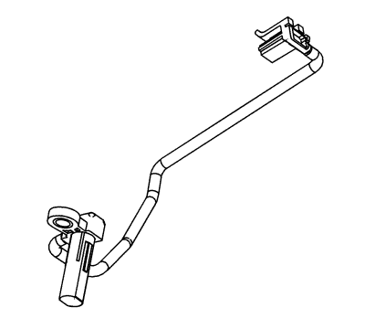

Sensor de velocidad de salida (OSS)

El sensor de revoluciones de salida (OSS) es un sensor tipo efecto Hall. El OSS está montado en la caja de la transmisión, bajo el conjunto del cuerpo de la válvula de control, y está conectado al conjunto de la válvula solenoide de control (con carrocería y TCM) a través de un mazo de cables y un conector. El sensor está orientado hacia la superficie dentada mecanizada del engranaje de estacionamiento. El sensor recibe 8,3-9,3 voltios en el circuito de tensión de alimentación ISS/OSS del TCM. A medida que el conjunto del piñón de accionamiento de transferencia diferencial gira, el sensor genera una frecuencia de señal basada en la superficie mecanizada del engranaje de estacionamiento. Esta señal se transmite mediante el circuito de señales del OSS al TCM. El TCM utiliza la señal del OSS para determinar la presión de línea, los esquemas de cambio de la transmisión, la proporción de marcha y la velocidad de deslizamiento del embrague del convertidor de par (TCC).
| © Copyright Chevrolet. Reservados todos los derechos |